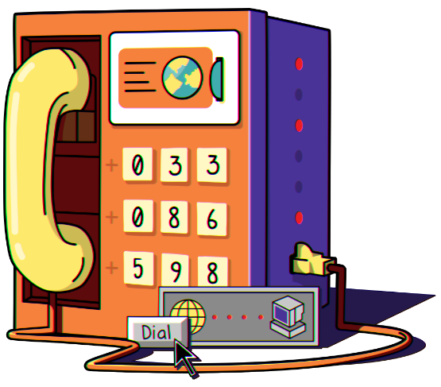

Subscribe to the podcast to receive new episodes as soon as we release them

1995 laid the groundwork for a truly global World Wide Web. But not every country took the same path to connecting to the internet. Some resisted, wanting to create their own version. Others had to fight for access, not wanting to be left behind. And while we made huge strides in connecting the world in those early years, we still have a long way to go.
Julien Mailland recounts the rollout of France’s Minitel service—how it was years ahead of the internet, but eventually lost its lead. Steve Goldstein explains what was involved in building the infrastructure to expand the NSFNET beyond the United States. Gianluigi Negro shares how China pushed for its connection, and how different it would be compared to the typical U.S. connection. And Christian O'Flaherty covers how costs weighed heavily on Argentina’s attempts to join the growing international network.
00:04 - Archival Audio
From Georgia to Palo Alto, from Oslo to Singapore, a vast array of information is being made available in attractive, easy-to-use form and for free, over the internet. A global electronic mall is under construction. People congregate here, interact here, and find the information they want. And here too...
00:30 - Saron Yitbarek
In 1995, the world was coming online. But that global electronic mall wasn't being built everywhere in the same way. There's an old quote from the author, William Gibson, that you might know, "The future is already here. It's just not evenly distributed." And that was never more true than the mid-90s when countries around the planet were racing to join the digital revolution. By that point, 9% of Americans were already online, but only 2% of people living in Eastern Europe and Asia had access to the internet.
01:07 - Saron Yitbarek
In some histories, the internet is this American invention that gets packed up and exported to everybody else. It's a cartoonish idea of a global village where everybody comes to hang out, but things were a lot more complicated than that. Every nation has its own economic, cultural, and political dynamics that fundamentally changed the way they came online.
01:34 - Saron Yitbarek
I'm Saron Yitbarek and this is Command Line Heroes, an original podcast from Red Hat. We've devoted all season to that pivotal year, 1995, when earlier networks like the ARPANET and the NSFNET gave way to the world wide web. But when we talk about the shift to online life, we often take an American point of view, yet different countries have very different onramps to the internet and the world wide web. So for this episode, we're breaking it up into three mini episodes. We'll visit 3 different nations to learn how they each built their own online futures back in 1995.
02:19 - Saron Yitbarek
Let's start our time-traveling journey with France. In 1995, the internet was arriving in France, but France Telecom, the giant telecommunications company now known as Orange was not so happy about the internet's arrival. One senior executive was even telling journalists, the internet would be banned, and why? Because France already had an internet of its own, thank you very much.
02:50 - Julien Mailland
I grew up with this system called Minitel.
02:53 - Saron Yitbarek
Julien Mailland is an associate professor of telecommunications at Indiana University, but he grew up in France in the 70s and 80s, and he wrote a book on the network that thrived during that time. The book was called Minitel and that was also the name of France's precursor to the internet.
03:13 - Julien Mailland
So what was Minitel? Minitel was a computer system that was rolled out into a large-scale production by the French government, through the Post and Telephone Ministry in 1983.
03:29 - Saron Yitbarek
You'd head down to your local post office and they'd give you a small terminal called a Minitel. Imagine a tiny desktop computer complete with a tiny keyboard and modem, all totally free. You bring your terminal home, plug it into your phone line and voila, access to a wide variety of Minitel sites.
03:52 - Julien Mailland
Starting very early in the mid 80s, basically everyone in France had access to things that wouldn't reach the rest of the world until the late 90s. Anything from online chat, online commerce, any information you can get online.
04:13 - Saron Yitbarek
Now, before you start tweeting a correction at me, yes, the U.S. had bulletin board services and yes, other countries had systems too. There was Presto in the U.K. and BTX in Germany, but in the 1980s nobody's network had anything like the reach that Minitel had in France. Millions of Minitel terminals were installed, and it's estimated that eventually half the French population was using them.
04:41 - Julien Mailland
Very much everyone was online and had access to all these services that only became mainstream in the rest of the world after 1995.
04:51 - Saron Yitbarek
How'd this happen? Necessity was the mother of invention. In the 1970s, France's old analog telephone network was in shambles. New lines were being installed by a nationalized company called PTT, and they could take years to install a new line.
05:09 - Julien Mailland
It was basically a disaster. It was not on par to what you think of one of the big world powers.
05:16 - Saron Yitbarek
At the same time, the U.S. grew more and more dominant in the field of telecommunications.
05:22 - Julien Mailland
France, I think has always been very concerned about U.S. cultural domination. After the war, people called it Coca-Colonization.
05:32 - Saron Yitbarek
So France actually had 2 problems. They had to update their crumbling phone system for starters, and they also had to fend off the Americans. The solution to both problems lay in digitizing the telephone network.
05:46 - Julien Mailland
There was a very important report in 1978 called, “The Computerization of Society.” And it basically said we can fix both our problems by creating a computer system that will be hooked up to the telephone network, and that was Minitel.
06:04 - Saron Yitbarek
By handing out Minitel systems to everyone in France, free of charge, you could jumpstart the marketplace. You're creating a huge need for French content and French tech to elbow aside the American companies who'd otherwise dominate. And at the same time, France's phone network is getting digitized. Minitel went national in 1982, and for a time it thrived. French citizens were enjoying the kind of web experience that Americans wouldn't have for years. There were chat rooms, there was e-commerce, online banking.
06:41 - Julien Mailland
And you also see at that time, the emergence of the connected home, the smart house. So you can connect your thermostat at home, your VCR, your garden sprinklers to Minitel.
06:56 - Saron Yitbarek
I mean, honestly, France was sort of killing it by publicly funding all this, giving a free computer to anybody who asked. The state had overnight, created an enormous platform, where private enterprise could come and innovate. They even had an app store called the Minitel kiosk that wasn't so different from the one Apple has today. So by 1995, you might think this incredible Minitel network was going to spread to the four corners of the earth. But...
07:30 - Julien Mailland
The export effort was a disaster. I think by 1995, France had given up on exporting Minitel.
07:40 - Saron Yitbarek
Other nations were trying to develop their own systems. And those other nations weren't necessarily willing to give millions of terminals away for free, the way France had. Without such a huge investment on behalf of the public, the Minitel system wouldn't make sense.
07:59 - Julien Mailland
One of the reasons Minitel really succeeded was because of this state intervention, but you couldn't really replicate all of that in other countries. And I think that that is one of the main reasons why Minitel did not export well.
08:13 - Saron Yitbarek
There was an effort to bring Minitel to America, by the way. In 1991, a company called 101 Online arrived in San Francisco.
08:23 - Julien Mailland
It was a disaster. They were trying to push these 1983 terminals onto the Bay area in 1991. That didn't work out too well for obvious reasons.
08:36 - Saron Yitbarek
What's fascinating to me is Mailland's reply. When we asked about the eventual failure of Minitel, I was not expecting this answer.
08:45 - Julien Mailland
I don't think Minitel failed at all. It failed at export, but they did not fail on a domestic level. It was very successful on the domestic level. When you think about the fact that you had a country that was completely online 20 years before most Americans had ever heard of the internet, I would call that a success.
09:08 - Saron Yitbarek
We have this idea today of what the internet is supposed to be. The world wide web is supposed to cover the planet in yeah, a world wide web, but the story of Minitel and France's futuristic adventure, reminds us that there's more than one possibility for a networked nation. Ironically, the infrastructure advances that Minitel made possible ended up creating a smoother rollout for the American style internet when it came to France. And Minitel itself was shut down in 2012 because it couldn't evolve into the kind of global force that the web could. But maybe it was never meant to. Maybe its beauty lies in the way it revitalized a nation, right at the moment when a change was needed. And I'm with Mailland, I’d call that a success.
10:06 - Saron Yitbarek
Okay. Where are we flying to next? Let's head over to the other side of the world to China. What did their 1995 look like? China had the CERNET, which began connecting their academic institutions, but they were eager to make connections with researchers around the globe. To do that, they need to patch into an American network backbone that can route them to all the other countries. For the first time, at the start of 1995, 64,000 lines connected Beijing and Shanghai to the U.S. Internet access was offered to the public via the telephone network. But getting to that point had been a long road. Chinese authorities had been asking for years to connect to the internet, but the Americans had refused because of political tensions between the countries. The pressure to connect was mounting though. A project from the National Science Foundation, the International Connections Management project, or ICM, began to offer a little hope. Steve Goldstein was the program's director.
11:16 - Steve Goldstein
I was able to travel pretty much around the world and work with the academic networks of other countries, to help connect them to what was at that point, at least in the early 90s, pretty much the core of the internet, which was the NSFNET, National Science Foundation Network.
11:36 - Saron Yitbarek
Not a small job. Goldstein describes how the actual connections were made.
11:42 - Steve Goldstein
The physical connection can be satellite, or it can be copper, or later on it could be fiber. It could be acoustic or can even be smoke signals. It doesn't matter. It's got to be some way of transmitting that information physically. But once that comes in, it's translated to another way, or protocol, that the routers recognize. And then the routers route, or route that signal, through the network that came into a point of presence, usually at one of the NSFNET regional networks, which will then connect it to the NSFNET backbone and thereby to all the other regional networks.
12:23 - Saron Yitbarek
They were especially eager to build connections to research centers around the globe. Goldstein himself lobbied for the creation of the ICM. In 1991, a partnership with Sprint made it possible.
12:37 - Steve Goldstein
Sprint at that time was just getting into internet business, and they saw this as an opportunity. And actually they zero-bid the solicitation, meaning that they said, "Okay, we'll do it. No charge." Sprint turned out to be a marvelous partner for the 5 years of the ICM project. They always bent over backwards to make things work.
13:03 - Saron Yitbarek
Goldstein reminded us these international connections weren't blazing fast. When they set one up for Poland, for example, it was 19.6 kilobits per second.
13:15 - Steve Goldstein
I was in one of their universities and they let me sit down to read my mail. And I gave the instruction, include, which meant download all my mail. And that was a stupid thing because there were 200 messages and the whole country was only at 19.6 kilobits per second. And I just clogged up their entire line.
13:36 - Saron Yitbarek
Today, Poland's connected at tens of gigabits per second, but that gives you an idea where these links to the larger world began. The ICM started arranging connections to the NSFNET for dozens of countries, even France, despite any hopes that Minitel would take over the world. But for years, China wasn't allowed to connect. And remember China didn't yet have the ability to build a global network of their own. In fact, every country on the planet needed that NSFNET backbone to reach outside their own borders with a TCP/IP connection. Most of those regional networks were academic and they were eager to access a series of other academic networks. For example, there were 280 universities in America alone that were tied to the NSFNET. Meanwhile, access to foreign academic networks was a huge incentive for the National Science Foundation, too. Despite those political hurdles, American academics were very interested in connecting with their Chinese counterparts.
14:44 - Steve Goldstein
There were some key institutions in that country that wanted to collaborate, sometimes in almost real time, with sister institutions in the United States. So, for example, there was the Institute of High Energy Physics near Beijing, that wanted to work on the high-energy physics programs, which were international—involve the United States, involve Europe, and so forth. So it was a matter of collaboration. So that connection was warmly greeted from that point of view.
15:16 - Saron Yitbarek
Championing the idea of China's connection to the global network was computer scientist, Qiheng Hu, speaking here with the Asia Internet History project.
15:26 - Qiheng Hu
Chinese science and technology people, there is a keen desire for the cheaper communication and the transmission of the big amount of scientific data during their scientific cooperation with their overseas cooperators. So that is the major reason why China at that time has such a motivation to acquire the internet.
15:58 - Saron Yitbarek
In 1994, Hu traveled to Washington D.C. for a committee meeting and made a special side trip to see the chair of the NSF, Neal Lane. She made the case that China had to be connected to the NSFNET, and it happened. On April 20, 1994, China became connected to the world wide web. Goldstein remembers Hu being a strong advocate for Chinese sovereignty, despite their need to connect on a shared network.
16:28 - Steve Goldstein
At one point, she had asked, "Well, okay, now can we connect?" I think I answered, and I said, "Yes, but will you agree that any academic person in China can use the link, not just members of the Communist Party." And her answer was, "Well, do you have such restrictions in the United States?" And she caught me. I had nothing to say. I said, "Okay, you win."
16:54 - Saron Yitbarek
There was a lot at stake for China, and arguably, it wasn't just about scientific collaborations. Gianluigi Negro, a professor at the University of Sienna, researches the history of the Chinese internet. He told us that connecting with the NSFNET was part of China's larger movement toward openness.
17:15 - Gianluigi Negro
At the time, China started to literally be more connected there, from not only the economic point of view, but also the political one. And this is very important because between the end of the 80s and the beginning of the 90s, there were a lot of projects that supported the telecommunication industry development in China.
17:37 - Saron Yitbarek
Opening up economically and opening up academically, went hand in hand. The World Bank began making enormous loans to China, helping them develop their networks. 1994 saw decades worth of change, suddenly happen once that day when Madam Hu's request was granted and the NSF connected China to the internet.
17:58 - Gianluigi Negro
For the first time, China was connected to the TCP/IP internet connection. So, this is very important from an infrastructure point of view.
18:11 - Saron Yitbarek
The Chinese internet was never going to be the same as the American internet, though. The so-called "great firewall" regulates what Chinese users can access. Sites like Baidu and Weibo dominate, instead of Google and Instagram. But Professor Negro reminded us that despite those differences, the Chinese internet parallels the American one in other ways.
18:34 - Gianluigi Negro
Think about both the mentality or about the Chinese application, or the Chinese services. The management that they have, they think about Alibaba, although they have a very strong connection with the Chinese government, their business mentality is very, very close to the U.S. one.
18:53 - Saron Yitbarek
This is a reality we see around the globe. While countries came online in their own way, and while every country's internet still navigates distinct politics and economic realities, there are also universals. The long work of creating a global networking infrastructure is about maintaining difference, while forging those common bonds. The internet we have today operates in that careful balance between universals and variations.
19:26 - Saron Yitbarek
We've got time for one more stop. Let's head over to the Americas now, South America. Our final destination, Argentina. By the spring of 1995, they were selling their first commercial internet connections. Email and local networks were established by the early 90s. But connecting to the internet itself was a much larger challenge. We asked Christian O'Flaherty, Regional Vice President for Latin America and The Caribbean at the Internet Society, to talk us through those early days.
20:02 - Christian O'Flaherty
International data links were not easy to get, very expensive. The bandwidth was low. There were a lot of impediments from, at the time, incumbents or monopolies for international data services.
20:18 - Saron Yitbarek
In the early networking days that O'Flaherty's describing, the early 90s, there were a few nodes with international connections, but they were super expensive satellite connections. The general public didn't have access at all. Academics in Argentina were pushing for a more genuine connection to networks beyond their borders.
20:41 - Christian O'Flaherty
It was mostly the pressure from those professors and researchers that were working in Europe and the U.S. and were using the internet in those countries. So when they came back to Argentina and other countries, they started looking for ways to get similar services.
21:03 - Saron Yitbarek
You remember that monopoly O'Flaherty mentioned? That was an international company called Telintel. And O'Flaherty told us that in the 90s, Telintel was dragging its feet, delaying the arrival of an affordable internet.
21:18 - Christian O'Flaherty
They didn't want to provide that service.
21:21 - Saron Yitbarek
A truly online Argentina was never going to be possible until somebody got them connected in an affordable way. And there didn't seem to be a local solution. But physicist Emma Perez Ferreira was looking beyond their borders. She's considered the person most responsible for bringing the internet to the people of Argentina.
21:42 - Christian O'Flaherty
She was a national pioneer and also a well-respected pioneer in the region. Emma was able to insist on many different areas of the government and elsewhere, and she was able to get this authorization to connect to the internet, getting service from whoever was able to provide it.
22:08 - Saron Yitbarek
If Telintel wasn't going to step up, then she would. Since the 1980s Ferreira had been the Director of a network called RETINA, that connected academics at a regional level. But she saw the potential for her mission to grow in the 90s when America began providing the NSFNET's backbone to the world. Suddenly through that ICM project of Steve Goldstein's, it was possible for Argentina to patch into that backbone and join a global internet. She received authorization to create a direct link via Florida. O'Flaherty describes the collaboration with American partners.
22:47 - Christian O'Flaherty
There was a lot of support and interest from different parties to help developing countries and in particular, Latin American countries, to connect to the internet.
22:59 - Saron Yitbarek
Starting in 1992, the connection to the NSFNET ran through the city of Homestead in Florida using the PanAmSat satellite. The router was managed by Sprint and the National Science Foundation paid the management port fees.
23:15 - Christian O'Flaherty
Many Latin American countries received support for equipment, and the port was provided free of charge. They facilitated the connection through training, and helped in getting our own IP addresses, and things like that.
23:32 - Saron Yitbarek
But getting Argentina's institutions to step up, wasn't as easy as you might think, because unlike the situation we heard about in France, most authorities in Argentina didn't yet understand what the internet could provide.
23:47 - Christian O'Flaherty
It was difficult to demonstrate that it was worth paying for those services for something that nobody knew about. So nobody used the internet when she was asking for funds and convincing the universities and the research institutions that it was worth spending the money that way.
24:11 - Saron Yitbarek
Ultimately, leaders like Ferreira were able to tie Argentina's networks to America's NSFNET. Up until that time, less than 0.1% of people in Argentina were internet users. But those numbers started exploding once the NSFNET connection was made, and today, three-quarters of Argentinians are online.
24:37 - Saron Yitbarek
We could keep on going. There are dozens of other stories we can't tell in a single episode. Every country had its own heroes, its own unique issues, when connecting to the rest of the world. Nobody's 1995 was the same.
24:56 - Saron Yitbarek
Our 1995 season has been telling a story about how the modern online experience arrived. But we have to remember, history doesn't really happen that way, because these other stories and timelines were always running in parallel. And yes, 1995 was a dramatic shift point, when the world wide web started racing around the planet, bringing with it a certain sameness to the internet. But when we dig into our history, we remember that the networks we share actually live inside distinct cultures with their own distinct histories and definitely their own futures. 41% of the world is still not online, and over the next couple of decades, as billions more people join the internet, it can't be just about exporting some American tech. And it can't be about folding the world into one tidy version of events. It's going to be about the internet meeting every country's own ambitions and hopes.
26:01 - Saron Yitbarek
You can learn more about how the internet came to France, China, Argentina, and other countries by checking out our bonus material at redhat.com/commandlineheroes.
26:13 - Saron Yitbarek
Next time in our season finale, the dot-com bubble that began in 1995 is finally going to burst. We'll see what lessons were learned when the year 2000 turned the tech world on its head. Until then, I'm Saron Yitbarek and this is Command Line Heroes, an original podcast from Red Hat. Keep on coding.
More from the episode...
About the art
In this episode, we explore the ways the internet came to three countries. We had no obvious object to serve as an analogue for the past to today. So we got down to what the episode was at its most basic level: Connection. But in 1995, before the internet took over, what was the object that provided that same connection? One that was so ingrained into our culture, that even movies were written around it. The payphone. The precursor to internet cafes and mobile phones–the payphone was not only a place for Superman to change outfits, but also the instant connection to whomever was worth the 10 cents to talk to right away.
By Karen King
Senior Designer, Lead
Further Reading
Each episode is based on a lot of research. Here are just a few of the resources we used to learn about the worldwide internet rollout:
Minitel: The Online World France Built Before the Web by Julien Mailland and
Kevin Driscoll
Beyond Minitel: France on the Internet by Barry James, International Herald Tribune
Internet by Max Roser, Hannah Ritchie and Esteban Ortiz-Ospina
Future Prospects for NSF's International Connections Program Activities by Steven N. Goldstein

On any day in the last 5 years,
there were on average 640,000 people
online for the first time.
Featured in this episode
Get the newsletter
After each episode drops, we send commentary from the Command Line Heroes team, as well as links that help you take a closer look at the topics we cover. It’s as simple as that.
Presented by Red Hat
For 25 years, Red Hat has been bringing open source technologies to the enterprise. From the operating system to containers, we believe in building better technology together–and celebrating the unsung heroes who are remaking our world from the command line up.